TrigPlot Help
Weclome to TrigPlot, the program that'll plot Your tringonometrical graphs.
Plotting:
- To start plotting, just click the Plot button
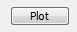
- It will plot sin(x) in red color by default
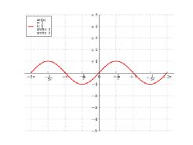
Changing function type:
- If you want to change sin(x) function to something else (cos(x), arctg(x), etc.), then You can choose in Type section:
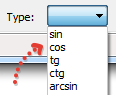
- In current version (1.5) TrigPlot supports 8 types of trigonometrial functions:
- sin, cos, tg (tan), ctg (cot)
- arcsin, arccos, arctg (arctan) and arcctg (arccot)
Changing function parametrs:
- To change function parametrs simply edit their definitions here:
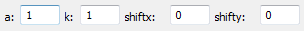
- There are 4 parametrs avalible:
- a - Amplitude
- k - Ciclyc frequency
- shiftx - Shift on OX axis
- shifty - Shift on OY axis
- Funtion's parametrs are also ahown in legeng in plot:
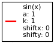
Changing function color:
- To change function color click Pick Color button
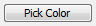
- You can choose one of the standart colors
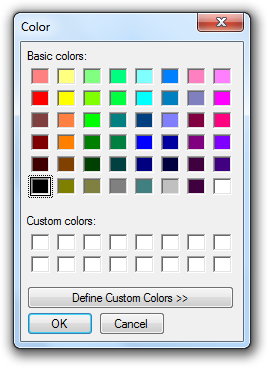
- Or choose color You like most in full RGB pallet:
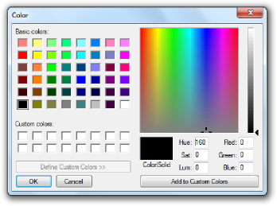
Navigate through plot:
- You can Zoom, Pan Your plot and return default view by clicking one of these buttons
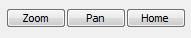
Saving graph:
- To save Your graph simply click Save Graph button
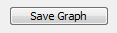
- and choose location and name for it
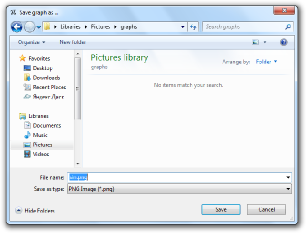
- In current version (1.5) TrigPlot supports saving graph as:
- Warning! As for now, You MUST type file extension in Save File dialog, so it can work correctly.
That's all for now. More stuff is coming later.
Hope You'll enjoy using TrigPlot!